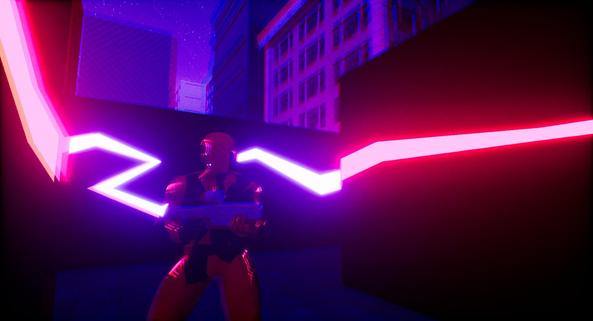

Parallel - 3rd Year Game Project
Parallel is a split screen, couch co-op third person shooter that also incorporates MOBA elements. We developed the game to draw in all of the best parts of each of these genres to ensure that the gameplay is both engaging, and works well in a local play setting. To set itself apart from other 3rd person shooters, Parallel encorporates MOBA elements such as turrets, minions, lanes and ultimates into the well known formula of a 3rd person shooter, having all of these elements together makes it so players have to work together much more as the win state of the games are entirely dependant on getting your minions to the other team's base, so strategy and teamwork is very important in Parallel, which is what makes it such a unique game.
This project was my third and final collaborative game project, it was created by a team of 12 people in Unreal 4.20 over a 9 month development cycle. Thanks to the amaout of projects that I have now completed in Unreal, implementing the features that I was required to undertake was much easier than previous years as I am now quite comfortable with using Blueprints. However this was the first time I have worked on a local multiplayer game in Unreal, so setting up the screen splitting and game modes was quite a task but it was a good feature to be able implement as these kinds of features are quite common place in any game title, so this will definitely help me in future when I hopefully enter an actual position in industry.
My contribution to this project mainly involved creating an balancing the many weapons that the game includes (Which are visible in the trailer linked below), this include the main assault rifle and sniper rifle of the stealth class, down to the cluster grenades and mines that are scattered around the map. Although this was quite a laborious task which involved a lot of tweaking of values and adjusting blueprints to balance and change the weapons according to player and designer feedback, it taught me the valuable skill of maintaining in near constant contact with both other members of my team and keeping up with playtesting data, which is an important skill in an actual development environment. My other contributions involved tweaking the player physics and generally how the gameplay handled as this something that I am extremely interested on in the future as my future aspiration lies with being a physics programmer or gameplay designer as I have mentioned else where here.
A trailer for the game is viewable here, the team twitter is also viewable here, there you can see the products of our sprints and some concept art that we used as promotional material.